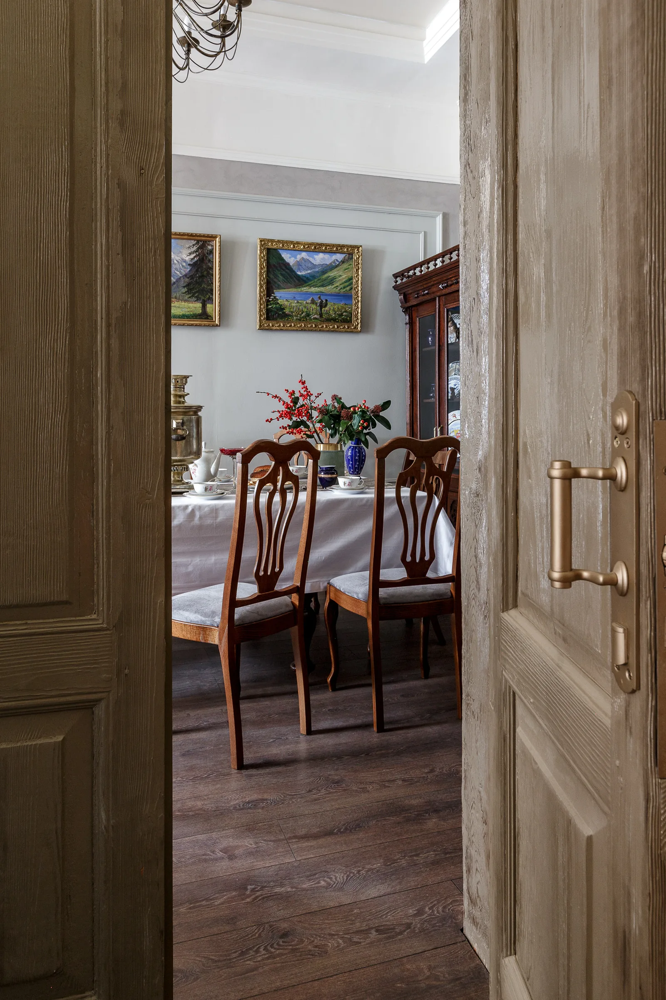
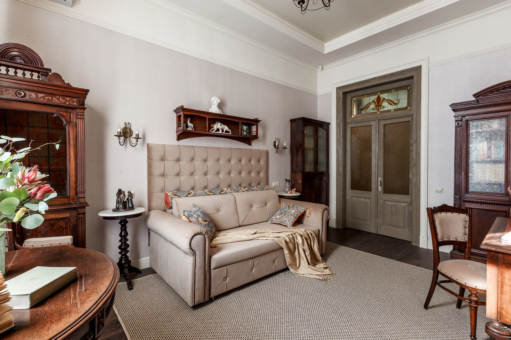
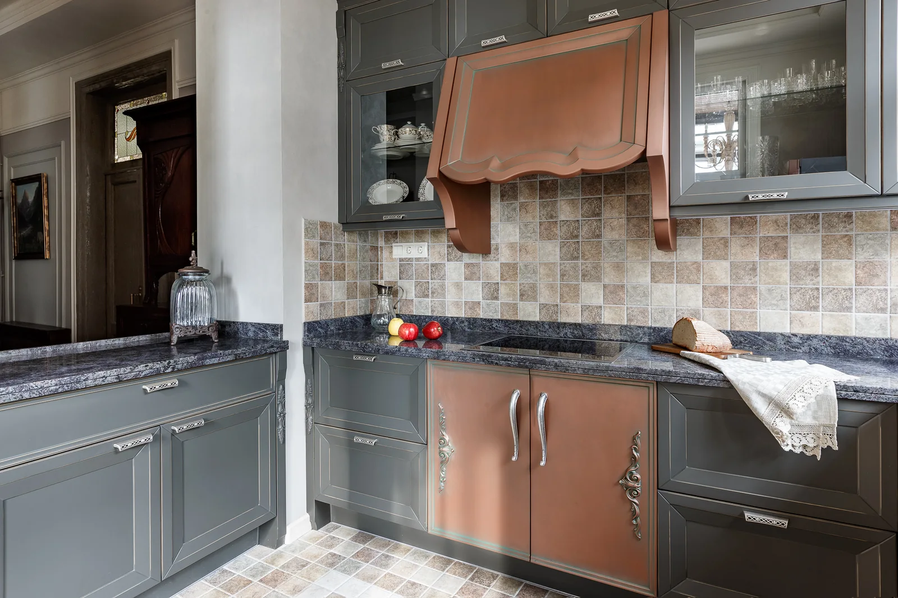
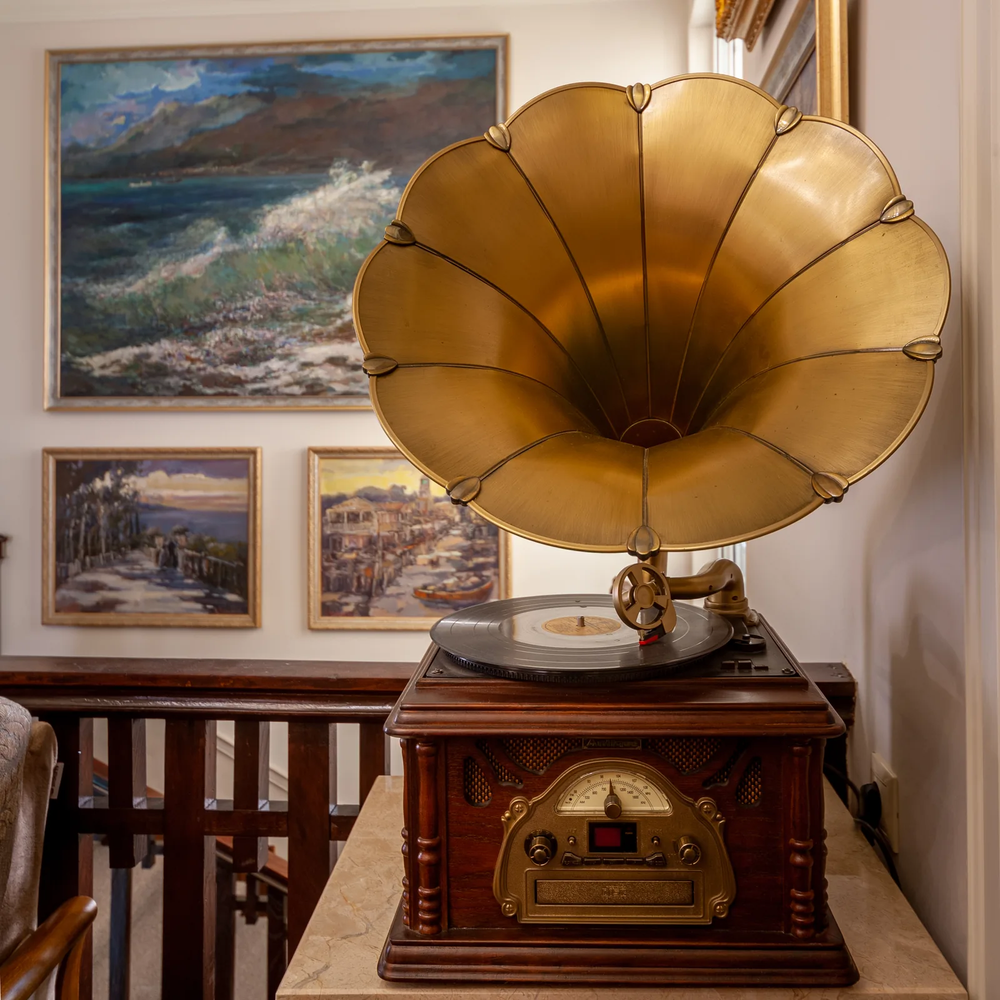

Тяжёлые дубовые двери в Доме Гордона перекосились и перестали закрываться. Их восстановление стало самой сложной частью работы над интерьером. Мастера выровняли створки, а затем подобрали краску, патину и лак. Дверями снова можно было пользоваться, и они остались частью дома.
Особняк в центре Сочи построили в начале XX века для Аркадия Львовича Гордона, первого городского врача. Проект здания выполнил архитектор Алексей Буткин. Руководил реставрацией Кирилл Владиславович Гордон. Восстановление интерьера шло с авторским сопровождением дизайнера и искусствоведа.
Семейные фотографии подсказали, что сохранить
К началу работ в доме сохранились антикварная мебель, дубовые двери и гипсовая лепнина. Старые семейные снимки помогали сопоставить то, что осталось, с прежней обстановкой. Через два года работы интерьер приблизился к тому, каким его знали по этим фотографиям.

Мебель восстановили по частям
Для венских стульев Thonet, кресел и диванов подобрали новую обивку из велюра, дамаска и кожи. На консолях и столиках заменили мраморные столешницы. В шкафах установили новые стёкла с фасетами и восполнили утраченные деревянные детали. У каждого предмета был свой объём работ, от замены обивки до восстановления декора.

Кухню спроектировали специально для дома
Кухня появилась в ходе проекта. Её разработали по эскизам для этого интерьера, а изготовила компания «Арт Холл». Серые фасады, тёмная столешница и медный акцент над рабочей зоной видны и на общих планах, и в деталях. В других помещениях работу с цветом и светом продолжили витражи в технике Тиффани и текстиль по мотивам гобеленов Уильяма Морриса.

Семейные вещи остались в интерьере
Хозяева сохранили самовар, посуду, старинные весы и граммофон. В доме остались и картины, в том числе работы самого Аркадия Гордона. Эти вещи помогают понять, каким был дом семьи врачей, и связывают отреставрированные комнаты с их прежними владельцами.
